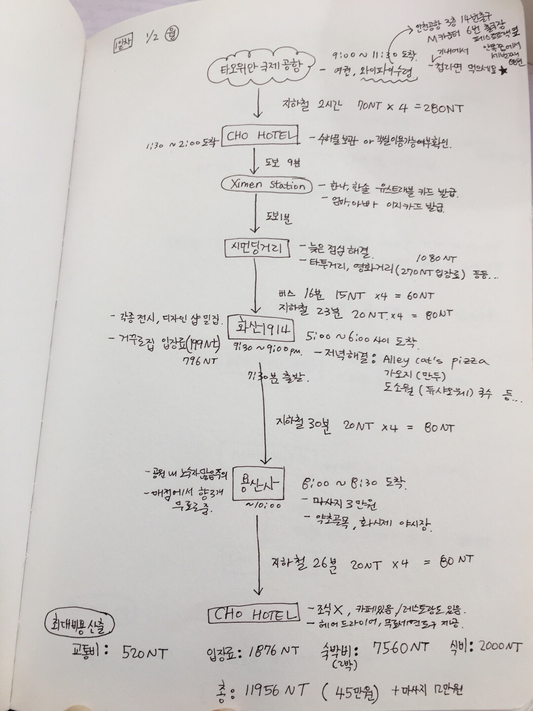

Taiwan
15살때 이후로 처음으로 온가족이 함께 떠난 여행
"엄마, 아빠는 돈을 낼테니 모든 계획은 너에게 맡긴다"
그래서 하나부터 열까지 온갖 블로그와 구글맵을 뒤져가며 계획한 여행!

첫째날, 모든 계획은 완벽하게 이행되었다.
대만의 우체국에서 수수료 없이 환전받겠다는 계획만 빼면...
그날은 대만의 명절이었고, 우체국과 은행, 환전소 모두 문을 열지 않았다!
둘째날의 계획도 빠짐없이 갈 수 있었다!
특히 타이베이 동물원을 보고, 이런 동물원에서 살면 동물도 행복하지 않을까라는 생각을 했다.
오각선반레스토랑은 음식보다는 인테리어를 보러가는게 좋을 것 같았고, 미라마 관람차는 생각보다 무서웠다..
셋째날은 매우 바쁜날이었다. 아침 일찍 일어나 중정기념당을 봤는데, 일부 공사중이라 아쉬웠다.
그리고 이 날의 메인코스였던 화롄! 화롄은 듣던대로 거대했고, 생각보다 멋있진 않았다.
다만, 투어를 마치고 택시기사분이 데려가주신 식당에서 먹은 새우완탕이 자꾸만 생각난다..
아주 빡셌던 스케줄로 인해 지친 우리가족은 스린야시장을 포기했다. 대신, 숙소근처가 시먼딩라 지파이 등등은 다 사먹을 수 있었다.
그리고 이날 가장 좋았던 것은 호텔이었다! 위치,시설,서비스 다 최고였당
넷째날은 충렬사를 포기하고, 국립고궁박물원으로 바로 출발했다.포기 안 했으면 큰일났을 정도로 볼게 많은 국립박물원이었다. 그리고 박물원내의 식당에서 밥을 먹었는데, 박물관 내부 음식점 창렬인건 만국 공통사항인가보다.
그리고, 내가 제일 기대하던, 예류,스펀,지우펀 택시투어! 이 세군데가 한국인들이 가장 많이 가는 코스기도 하고, 가장 아름다운 광경을 자랑하기도 하는데, 위치가 다 가깝지 않아서 주로 택시투어를 이용한다.
대만 오기 전에 미리 이곳 저곳 알아보고 예약한 덕분에, 영어 중국어는 물론 한국말에 유머감각까지 갖추신 택시기사 아저씨와 투어를 할 수 있었다. 아저씨가 한걸음씩 옮길때 마다 사진을 찍어주셔서 덕분에 가족사진이 엄청 많아졌다.
특히 나는 지우펀에서 먹었던 오징어튀김이 제일 좋았다.
그리고는 엄마 아빠의 피로를 풀어주기 위해 예약한 온천딸린 호텔로 짐을 챙겨 이동했는데, 너무 시골 산골짜기에 있어서 피로를 풀어주려다가 피로감을 더 안겨드렸다..ㅎ
그래도 계란냄새나는 유황온천에 푹 담그고 자니까 개운하고 좋았다!
마지막날, 생각보다 산골짜기로 들어와버리는 바람에 홍마우청을 포기했다. 그리고 베이터우의 온천시냇물을 따라 역으로 내려와 곧바로 공항으로 출발했다.
여유롭게 비행기를 타고 돌아와 김치찌개에 삼겹살로 여행을 마무리했다!